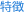
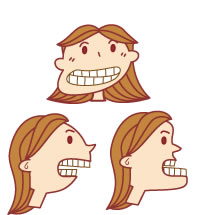
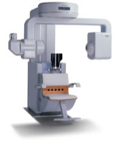
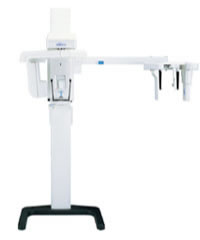
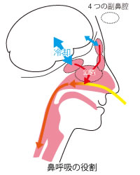
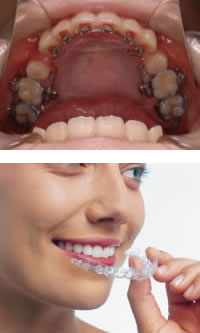
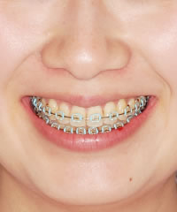

指定自立支援医療機関（育成医療・更生医療） 顎口腔機能診断医療機関



下あごの骨や上あごの骨が過度に大きく成長したり、逆に成長が少なかったりして、さらに左右に変形していたり、上下のあごの骨の骨格的なバランスの乱れが原因で、噛み合わせが悪くなっている人がいます。これは、顎変形症といい、外科的矯正治療（矯正歯科治療と外科手術）によってかみ合わせと上下のあごの骨のバランスを同時に回復する治療を行います。 なお、当院では、コーンビームCTを用いて顎顔面の3次元情報を基に分析を行うとともに仮想手術でのシュミレーションを行うことが可能です。手術後に予想される骨や顔貌のバランスをお見せして、インフォームドコンセント（患者さんに対する説明と理解）に役立たせております。
矯正歯科治療も外科処置も両方健康保険が適応です（顎口腔機能診断施設の認定を受けた施設のみ）。

当院では、平成15年からコーンビームCTと呼ばれる、X線の被爆量が少なく、高精度な顎顔面領域に特化した歯科用CTを運用しており、これは北海道の矯正専門医で、唯一当院だけが所有しております。主にあごの骨の三次元分析（外科的矯正治療）や、顎関節の分析、親しらずや埋伏歯（骨の中に歯が埋まって出てこない状態の歯）の位置確認、耳鼻疾患の確認などに利用しています。また、一般の歯科クリニックからの依頼として、近年普及してきている歯科用インプラント（人工歯根）の骨検査なども行っています。
MRIは、主に歯科領域では顎関節症（口が開きにくくなる、開けると痛みが生じる、関節の音がなるなど）の状態を調べるためにJR札幌病院や札幌東徳洲会病院に撮影依頼し、当院のCT画像と併せて総合的な診断・分析に役立たせています。

当院では、広い範囲のＸ線写真（パノラマ・セファロ）、および狭い範囲のＸ線写真（デンタル・オクルーザル）の両方のデジタル化を達成しました。これにより、患者様のＸ線被爆量を最小限に抑え、より安全な治療を目指しています。また、フィルムレス（従来のフィルムの現像処理がないため排液が出ない）により、環境に配慮しています。撮影したレントゲンのデジタルデータは、院内LANのモニター上で画像解析を行い、ペーパーレス環境を整え、これも同じく環境に配慮しています。

噛み合わせの異常の原因が、鼻疾患と関連していると疑われる患者さんが年々増えてきています。レントゲン上でアデノイド（咽頭扁桃肥大=いんとうへんとうひだい）が認められたり、口蓋（こうがい）扁桃が肥大していたりして、鼻呼吸（鼻で息をすること）ができず、口呼吸（口で息をすること）をしている患者さんがいます。さらにアレルギー性鼻炎や副鼻腔（びくう）炎などが悪影響を与えている場合もあります。
口呼吸では気道の組織が守られず、風邪を引いた時などは高熱の原因となり、口腔内も乾燥して、虫歯や歯周病、口臭などを誘発します。舌の位置も変化し、歯列不正や顎骨（がくこつ＝アゴの骨）の発達にも悪影響を及ぼします。
当院ではCTの導入によって、耳鼻疾患の状態を把握して治療を行っています。

リンガルブラケット：
当院では、見えない：目立たない矯正装置として、ブラケットを歯の裏側につけるリンガルブラケットを使用して治療しています。これは、「矯正をしたいけど、目立つのはいやだなあ」と矯正治療を始める勇気のなかった方におすすめの矯正歯科治療法です。
インビザライン：
「インビザライン」は、透明で取り外しができるマウスピースを治療計画に基づいて、コンピューターでカスタムオーダーで制作し、それを、上下の歯列に順次装着することで、歯並びと噛み合わせを作っていく矯正治療です。

今や矯正歯科治療は普及し、一般の理解も得られるようになりました。こそこそと隠れて治療したり、目立たなくしてもらうのではなく、むしろ積極的に治療していることをアピールするようになってきています。
当院でも、装置を止めるゴム（ブラケットとワイヤーをとめるゴム）を、下の写真のように、ピンクやグリーン、ブルーやオレンジなど、いろいろな色を使用して、ファッション感覚で楽しんでいる患者さんが増えてきています。このゴムは、通院時に交換するので、毎回いろいろな色を楽しむことができます。このコーナーでは、色のコーディネート例なども紹介しています！また、矯正治療の話題の映画や、矯正治療を経験した有名人などもご紹介いたします！